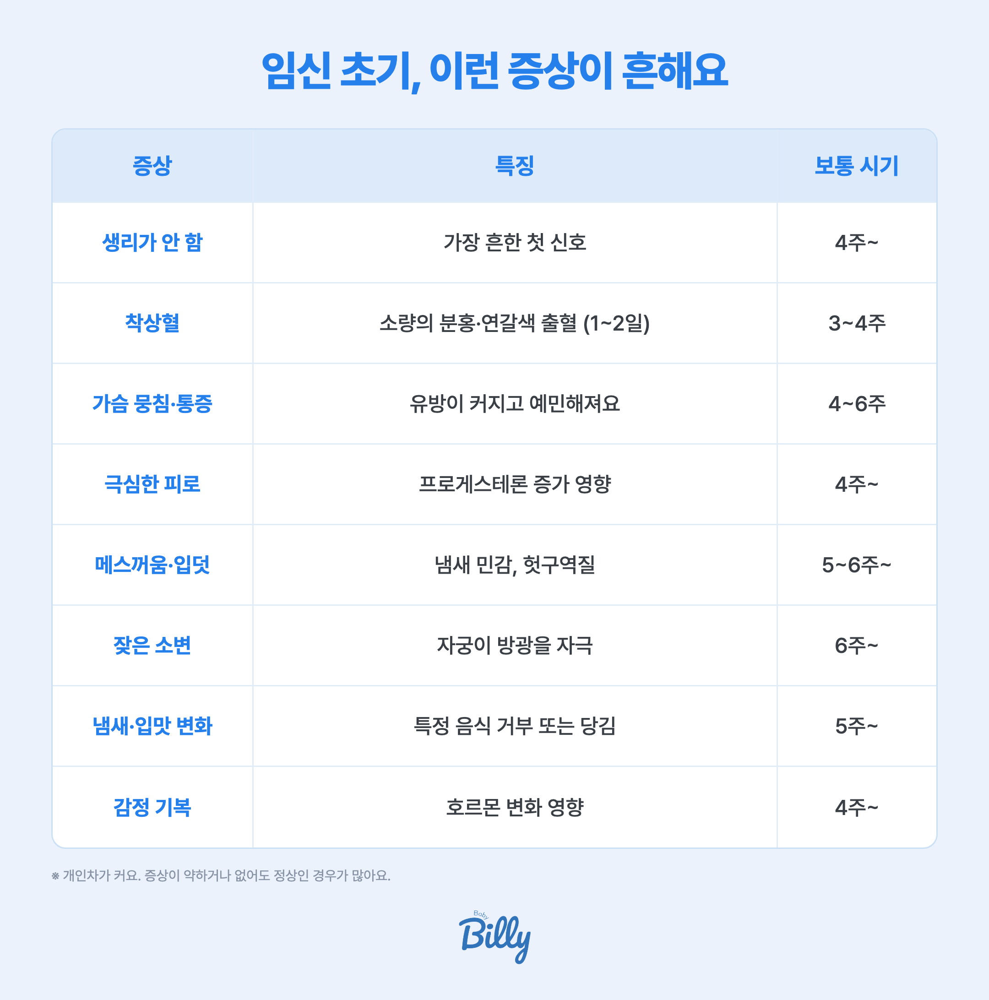
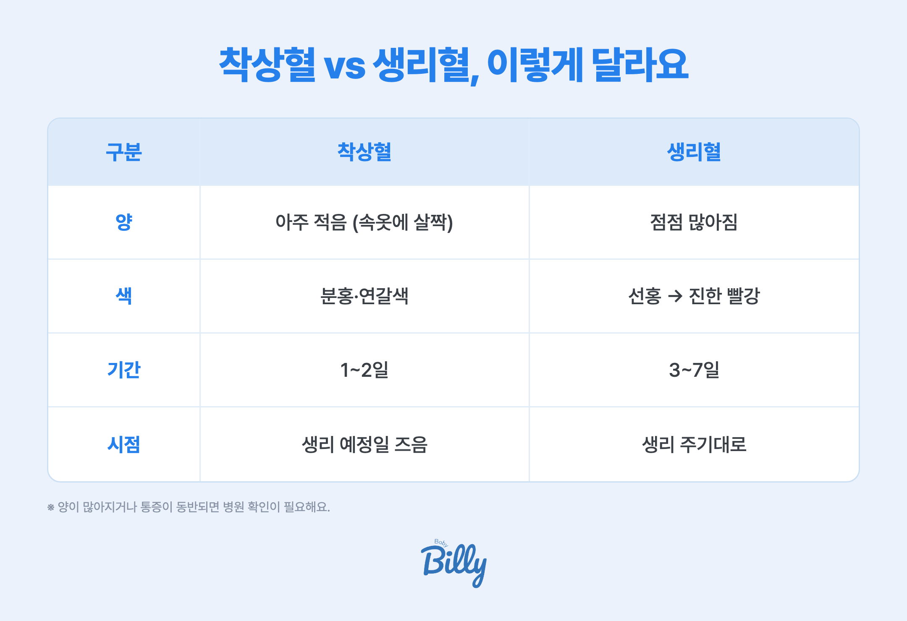
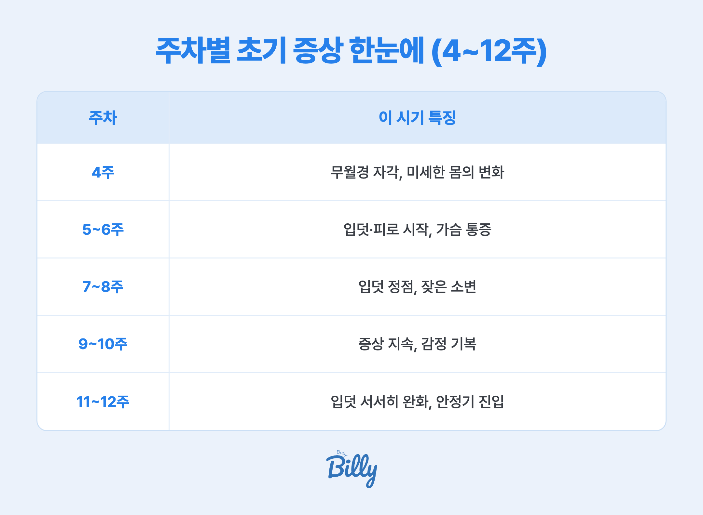

임신 초기 증상은 보통 임신 4~6주부터 느껴져요. 가장 흔한 신호는 생리가 안 함·착상혈·가슴 뭉침·극심한 피로·메스꺼움·잦은 소변이에요. 대부분 정상이지만 심한 한쪽 아랫배 통증+출혈, 다량의 선홍색 출혈, 심한 어지럼은 즉시 병원에 가야 해요.
임신 초기 증상, 언제부터 나타나나요?
증상은 보통 마지막 생리 시작일 기준 임신 4~6주 무렵부터 느껴져요. 착상이 임신 3~4주에 일어나고, 이때부터 호르몬(hCG)이 늘며 몸이 변하기 시작하죠.
- 빠른 경우 — 착상 직후(생리 예정일 전후)부터 미세하게
- 보통 — 5~6주경 입덧·피로가 뚜렷
- 개인차 — 늦게 느끼거나 거의 못 느껴도 정상
가장 흔한 임신 초기 증상 8가지

| 증상 | 특징 | 보통 시기 |
|---|---|---|
| 생리가 안 함 | 가장 흔한 첫 신호 | 4주~ |
| 착상혈 | 소량의 분홍·연갈색 출혈 (1~2일) | 3~4주 |
| 가슴 뭉침·통증 | 유방이 커지고 예민해져요 | 4~6주 |
| 극심한 피로 | 프로게스테론 증가 영향 | 4주~ |
| 메스꺼움·입덧 | 냄새 민감, 헛구역질 | 5~6주~ |
| 잦은 소변 | 자궁이 방광을 자극 | 6주~ |
| 냄새·입맛 변화 | 특정 음식 거부 또는 당김 | 5주~ |
| 감정 기복 | 호르몬 변화 영향 | 4주~ |
※ 개인차가 커요. 증상이 약하거나 없어도 정상인 경우가 많아요.
착상혈 vs 생리혈, 어떻게 구분하나요?

| 구분 | 착상혈 | 생리혈 |
|---|---|---|
| 양 | 아주 적음 (속옷에 살짝) | 점점 많아짐 |
| 색 | 분홍·연갈색 | 선홍 → 진한 빨강 |
| 기간 | 1~2일 | 3~7일 |
| 시점 | 생리 예정일 즈음 | 생리 주기대로 |
소량 출혈이 무조건 걱정은 아니지만, 양이 많아지거나 통증이 동반되면 병원 확인이 필요해요.
이런 증상은 바로 병원에 가야 해요
- 한쪽 아랫배가 심하게 아프고 출혈 → 자궁외임신 의심
- 선홍색 출혈이 많고 덩어리 → 유산 신호 가능
- 심한 어지럼·실신, 어깨 통증 → 자궁외임신 파열 응급
- 아무것도 못 먹을 만큼 심한 구토 → 임신오조
증상이 하나도 없어도 괜찮나요?
네, 증상이 약하거나 거의 없어도 정상인 경우가 많아요. 증상의 강도와 임신의 건강함은 꼭 비례하지 않아요. 다만 임신 확인·초기 검진은 받아보시고, 걱정되면 산부인과에서 확인하세요.
주차별 초기 증상 한눈에 (4~12주)

| 주차 | 이 시기 특징 |
|---|---|
| 4주 | 무월경 자각, 미세한 몸의 변화 |
| 5~6주 | 입덧·피로 시작, 가슴 통증 |
| 7~8주 | 입덧 정점, 잦은 소변 — 임신 8주 증상·태아 발달 |
| 9~10주 | 증상 지속, 감정 기복 |
| 11~12주 | 입덧 서서히 완화, 안정기 진입 |
베동 엄마들은 실제로 뭘 가장 많이 이야기할까?
베이비빌리 베동 커뮤니티에서 임신 초기(1~3개월) 엄마들이 올린 글 10,111건(최근 1년)을 분석했어요. 교과서적 증상 목록과 달리, 실제로 가장 많이 이야기하는 건 이래요.
| 순위 | 실제로 많이 이야기한 것 | 글 언급 비율 |
|---|---|---|
| 1 | 입덧 | 16.8% |
| 2 | 아기집 확인 | 13.5% |
| 3 | 태아 심장소리 | 7.4% |
| 4 | 메스꺼움·울렁거림 | 6.9% |
| 5 | 출혈·피비침 | 6.2% |
| 6 | 아랫배 통증 | 4.2% |
※ 베이비빌리 베동 커뮤니티 임신 초기(1~3개월) 글 10,111건 분석 (2025-07~2026-07). 한 글이 여러 증상을 언급할 수 있어 비율 합계는 100%를 넘을 수 있어요.
📱 내 주차엔 어떤 게 정상일까? 매일 챙겨드려요
주차마다 필요한 증상 체크·검진·할 일이 달라져요. 베이비빌리 앱이 내 예정일 기준으로 "이번 주 챙길 것"을 매일 알려드려요.
베이비빌리 앱에서 내 주차 보기 →자주 묻는 질문
보통 임신 4~6주부터 느껴지지만, 착상 직후 느끼거나 거의 못 느끼는 경우도 있어요. 개인차가 큽니다.
착상혈은 양이 아주 적고(분홍·연갈색) 1~2일이면 멎어요. 생리는 양이 점점 많아지고 3~7일 지속돼요. 양이 많거나 통증이 있으면 병원 확인이 필요해요.
증상이 약해도 정상인 경우가 많아요. 증상 강도와 임신 건강함은 비례하지 않습니다.
자궁이 커지며 생기는 가벼운 당김은 흔해요. 다만 한쪽이 심하게 아프거나 출혈을 동반하면 병원에 가세요.
임신이 확인되면 초기 검진을 받고, 심한 복통·다량 출혈·심한 어지럼이 있으면 즉시 병원에 가세요.
함께 보면 좋은 가이드
참고 자료
- 대한산부인과학회, 임신 초기 안내. 대한산부인과학회
- American College of Obstetricians and Gynecologists, Early Pregnancy. ACOG
- 보건복지부 국가건강정보포털, 임신·출산 정보. 국가건강정보포털
※ 본 페이지의 의학 정보는 대한산부인과학회·ACOG·보건복지부 자료와 베이비빌리 베동 커뮤니티를 기반으로 정리한 일반 안내예요. 증상과 위험 신호는 개인마다 다르니, 이상이 느껴지면 산부인과 진료를 받아 주세요. 특정 상품을 권유하지 않습니다.